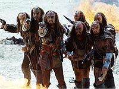
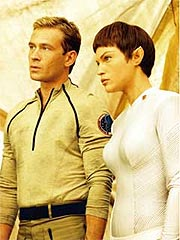
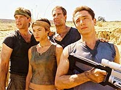

|
MANCHETE
DO EPISÓDIO
Volta dos Klingons oferece episódio
bonito, mas bem fraquinho em conteúdo
Episódio
anterior | Próximo
episódio
Sinopse:
A Enterprise visita um planeta indicado por um mercador Kreetassano na tentativa de obter suprimentos de deutério, uma vez que seus estoques estão terminando. Archer, T'Pol e Trip descem à superfície em um shuttlepod, na tentativa de negociar a aquisição da substância, mas os mineradores locais alegam que não possuem o produto em quantidade suficiente para fazer a venda. Não é o que revelam as leituras obtidas em órbita, alega T'Pol. Desconsertados, os mineradores Quonset, liderados por Tessic, alegam que seu estoque já está todo vendido.
Archer já está prestes a desistir da negociação quando o colega de Tessic,
Maklii, pergunta se algum deles entende de encanamentos e bombas. Trip se oferece para ajudar, assim que pegar suas ferramentas no shuttlepod. Lá ele encontra um menino,
Q'Ell, que diz ter ido lá apenas para ver como era a nave recém-chegada por dentro. Ele demonstra ter algum conhecimento de naves e os dois ficam amigos. Trip promete dar a ele um tour na Enterprise assim que for possível.
De volta ao trabalho, Trip ajuda os mineradores a recolocar duas de suas bombas em funcionamento. Em troca desse serviço e de suprimentos médicos, Archer consegue negociar parte do deutério que a Enterprise precisa. Mas as negociações são interrompidas quando vem a informação de que uma nave Klingon está entrando em órbita. Archer ordena que Mayweather mantenha a Enterprise fora do alcance de detecção dos Klingons, enquanto o grupo avançado se esconde em uma das barracas, apenas observando Tessic receber os recém-chegados.
 Pela discussão, fica muito claro que o Klingon Korok é o tal "comprador" dos estoques dos mineradores. Tessic explica que ainda não tem a quantidade exigida pelos Klingons, pois teve problemas com duas de suas bombas e não esperava Korok tão cedo -- ele estava três dias adiantados. Vendo as bombas em operação, Korok não acredita na história de Tessic e o agride.
Maklii tenta defendê-lo, mas acaba apanhando ainda mais forte. Korok diz que voltará em três dias, e que é bom que o estoque esteja completado até lá. Os Klingons partem e os mineradores rapidamente oferecem atendimento médico a Tessic e
Maklii.
Indignado, Archer tenta convencer Tessic de que eles precisam reagir, mostrar aos Klingons que não são vulneráveis aos saques. Tessic diz que os Klingons já saqueiam a colônia há
cinco anos, e que uma vez os colonos tentaram reagir, o que acabou causando a morte de quatro deles, incluindo o pai do menino
Q'Ell.
Tessic diz que Archer deve pegar seu deutério e partir imediatamente, ameaçando até matá-lo se ele fizer diferente. O trio volta à Enterprise, e Trip é obrigado a cancelar aquele tour prometido a
Q'Ell. Mas o capitão ainda não está convencido. Depois de conversar com T'Pol, ele decide voltar à superfície e tentar convencer Tessic a mais uma vez reagir aos Klingons.
Dizendo que dessa vez iria dar certo, por conta da ajuda que a Enterprise iria oferecer para treinar os colonos a se defenderem, Archer consegue convencer o líder dos colonos. Eles preparam então um plano para rechaçar os Klingons. A idéia é deslocar toda a colônia -- que é móvel e totalmente modular -- uns 50 metros, escondendo os pontos em que está sendo feita a extração do deutério. Quando Korok e seus comparsas voltassem, bastaria atraí-los para os pontos em que estavam as bombas e ignitar o deutério, prendendo-os em uma armadilha.
Enquanto os colonos trabalham na realocação da colônia, T'Pol, Reed e os demais tripulantes oferecem treinamento aos habitantes locais. T'Pol ensina técnicas de defesa Vulcanas num combate corpo-a-corpo, e Reed e Hoshi ajudam a melhorar a mira dos colonos no uso de armas.
 Quando os Klingons retornam, o plano de Archer e cia. é colocado em curso. Os saqueadores são atraídos até o local em que estavam as bombas de extração de deutério, e Trip ativa um explosivo que inicia a combustão, deixando os Klingons aprisionados pelo fogo.
Tessic então vai até eles e ordena que partam e nunca mais retornem. Sem opção, Korok decide voltar à sua nave e obedecer às ordens dos colonos. Os mineradores estão agradecidos a Archer pela ajuda e fornecem a ele todo o deutério de que a Enterprise precisa, e chega o momento de a NX-01 seguir viagem.
Comentários:
"Marauders" é um episódio com interessantes qualidades cinematográficas -- na fotografia e, em menor escala, na música. Mas
falha no principal item exigido de um segmento de Jornada nas
Estrelas: a história.
Demasiado simplista e com o realismo passando longe, o enredo bolado por Rick Berman e Brannon Braga não se sustenta após uma análise mais atenta. Há muita boa intenção: eles trazem de volta os velhos Klingons, exploradores (no pior sentido do termo), corruptos, tais como os que vimos na
Série Clássica (episódios como "Friday's Child" e
"A Private Little War" vêm à mente logo de cara), e oferece a Archer e cia. um pouco de diplomacia caubói, também reminiscente do espírito clássico.
Infelizmente, o aproveitamento desses elementos é muito mais frágil aqui do que no seriado original. Toda a trama, o envolvimento de Archer e a resolução do problema não resiste a uma boa dose de bom senso. A única qualidade realmente redentora do episódio é mostrar o tipo de relacionamento que se formaria entre humanos e Klingons dali para frente, no velho modelo de "Guerra Fria".
Se em termos de continuidade da série e do universo de Jornada isso é valioso, para o episódio em si não faz muito de bom. Note que a história só tem um final feliz por conveniência de roteiro. Afinal de contas, o que impedia os Klingons de simplesmente se teletransportarem de volta à nave e então de volta ao planeta, numa posição que daria a eles uma vantagem estratégica, fugindo do cerco em que foram colocados?
E pensando a longo prazo, a noção de que os colonos estariam prontos para retaliar uma outra investida Klingon após as rápidas "aulas" dadas pelo pessoal da Enterprise (em meros três dias!) é totalmente equivocada. Eles só venceram os Klingons aqui porque pegaram os guerreiros de surpresa, estavam em número superior, tiveram a ajuda direta dos tripulantes da Enterprise e já sabiam exatamente quando os inimigos iriam chegar, onde, e com que propósito.
Para falar a verdade, os Klingons poderiam acabar com os colonos enquanto estavam em órbita, simplesmente disparando contra as instalações em terra. Enfim, não haveria meio de proteger-se deles depois de tê-los posto para correr da superfície! Só não era uma batalha perdida porque os roteiristas estavam do lado dos mocinhos -- o que não é nem um pouco alentador.
 Por essas razões,
"Marauders" só pode ser apreciado uma vez que você opte por encará-lo com seu dispositivo de "suspensão da descrença" devidamente ativado. Mas, quando se faz isso, não é um episódio desagradável.
Dessa vez os designers acertaram na mosca para criar o cargueiro Klingon. A nave é reminiscente dos designs típicos da raça, mas guarda muito mais a aparência de "banheira velha", o que ajuda a fortalecer a idéia de que estamos no século 22 e, mesmo nessa época, essa nave já não é lá essas coisas.
A predominância absoluta de cenas em locação, filmadas na colônia de extração de deutério (na verdade, num deserto da Califórnia), dá ao episódio um aspecto interessante, reforçado pelos ângulos e movimentos de câmera interessantes, embora conservadores, encontrados pelo diretor Mike Vejar para dar vida aos pobres cenários da colônia.
Outro fator interessante aqui é a incrível (e atípica) dependência de certas cenas de uma música mais intensa, com tomadas sem diálogo. Isso faz com que
"Marauders" seja um dos episódios mais "musicais" da temporada. Em compensação, serve para ressaltar o quanto a música de
Jornada nas Estrelas costuma ser pobre. Por maior que tenha o esforço do compositor Velton Ray Bunch, infelizmente não há aqui uma trilha que se destaque. É mais música de elevador, como costumam dizer. Boa música, mas ainda assim de elevador.
Em termos de efeitos especiais, o episódio exige bem pouco, mas oferece a competência de costume (especialmente no efeito de teletransporte Klingon e na nave dos saqueadores).
Para os personagens, o material realmente não foi ruim. O relacionamento de Trip Tucker com o menino da colônia,
Q'Ell, funciona e traz um pouco mais da personalidade do engenheiro. Além disso, Archer mostra sua crescente preocupação com a opressão Klingon e com a necessidade de intervir quando não se trata de uma questão filosófica de preservar ou não o rumo evolutivo de uma civilização. É uma distinção importante, que Kirk sabia fazer como ninguém (às vezes até com umas belas forçadas de barra) e que nosso capitão do século 22 está começando a descobrir.
Também é interessante ver o conflito interno de Archer, que, embora defenda que os colonos devem se defender dos Klingons, em nenhum momento tem a certeza de que a ação deles será bem-sucedida e não trará nenhum resultado catastrófico. Foi um belo ponto a ser tocado. E, felizmente para o capitão (e infelizmente para a audiência), os roteiristas estavam do lado dele e tudo acabou dando certo.
Descobrimos também que Hoshi Sato já domina com perfeição a arte do tiro, para satisfação de seu "professor" Reed, que também tem importante participação na organização da ofensiva contra os Klingons. Phlox tem apenas uma pequena participação ao fornecer suprimentos à médica local E'Lis, antes de Archer e cia. descobrirem a presença Klingon. Mayweather tenta acertar uma paulada em T'Pol. Mas fica muito claro que todas essas cenas (com exceção talvez das de Reed) foram escritas apenas para dar uma aparição aos personagens regulares. O episódio é mesmo centrado no trio Archer, Trip e T'Pol.
Quando você tem três Klingons listados no elenco, e apenas um deles tem nome, não se pode exigir que os atores tenham um bom desempenho, certo? Robertson Dean cumpre seu papel sem muito brilho como Korok, e os demais têm ótimo desempenho como dublês.
Fechando a conta, "Marauders" não é um episódio catastrófico, como
"A Night in Sickbay", porque respeita os personagens e sua caracterização. Mas também não chega a ser brilhante, apesar de suas qualidades estéticas, por conta de seus problemas intrínsecos ao enredo e ao desfecho da história.
Citações:
T'Pol - "This may surprise you, captain, but I agree with you."
("Isso por surpreendê-lo, capitão, mas eu concordo com o sr.")
Archer - "There is a saying on my planet; give a man a fish and he will eat for a day. Teach a man to fish and he will eat for a lifetime."
("Há um ditado em meu planeta; dê um peixe a um homem e ele vai comer por um dia. Ensine-o a pescar e ele vai comer pela vida inteira.")
Trip - "Malcolm has this rule -- you've got to be taller than the gun to use it."
("Malcolm tem essa regra -- você precisa ser mais alto que arma para usá-la.")
Trivia:
 O ator Larry Cedar é um especialista em segundas temporadas de Jornada nas
Estrelas. Ele interpretou Nydrom, em "Armageddon Game" (segunda temporada de
Deep Space Nine), e Tersa, em "Alliances" (segunda temporada de
Voyager).
O ator Larry Cedar é um especialista em segundas temporadas de Jornada nas
Estrelas. Ele interpretou Nydrom, em "Armageddon Game" (segunda temporada de
Deep Space Nine), e Tersa, em "Alliances" (segunda temporada de
Voyager).
Bari Hochwald já havia interpretado a dra. Elizabeth Lense, em
"Explorers" (Deep Space Nine), e Brin, em
"Friendship One" (Voyager).
Robertson Dean havia interpretado um piloto em
"Face of the Enemy" (A Nova Geração). Wayne King, Jr. foi um dublê em
"Jornada nas Estrelas: Primeiro Contato".
Scott Bakula definiu o episódio, logo após o fim das filmagens. "Acabamos de acabar um episódio em que pousamos para pegar deutério e descobrimos que as pessoas no planeta estão sendo basicamente mantidas prisioneiras por Klingons que pegam o que querem quando querem."
As filmagens aconteceram de 21 de agosto de 2002 a 30 de agosto. As cenas em locação, no Condado de Ventura, na Califórnia, aconteceram a partir do dia 26.
Ficha
técnica:
História de Rick
Berman & Brannon Braga
Roteiro de David Wilcox
Direção de Mike Vejar
Exibido em 30/10/2002
Produção:
032
Elenco:
Scott
Bakula como Jonathan Archer
Jolene Blalock como
T'Pol
John Billingsley
como Phlox
Anthony Montgomery
como Travis Mayweather
Connor Trinneer como
Charlie 'Trip' Tucker III
Dominic Keating como
Malcolm Reed
Linda Park como Hoshi Sato
Elenco convidado:
Larry Cedar como Tessic
Jesse James Rutherford como Q'Ell
Robertson Dean como Korok
Bari Hochwald como E'lis
Steven Flynn como Maklii
Wayne King, Jr. como Klingon 1
Peewee Piemonte como Klingon 2
Episódio
anterior | Próximo
episódio
|